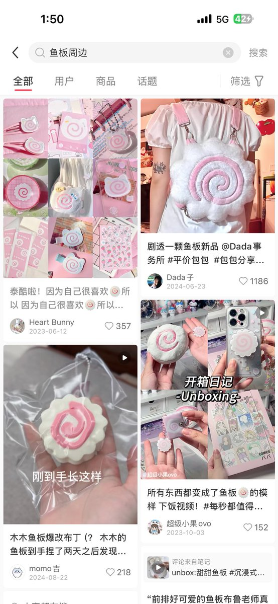
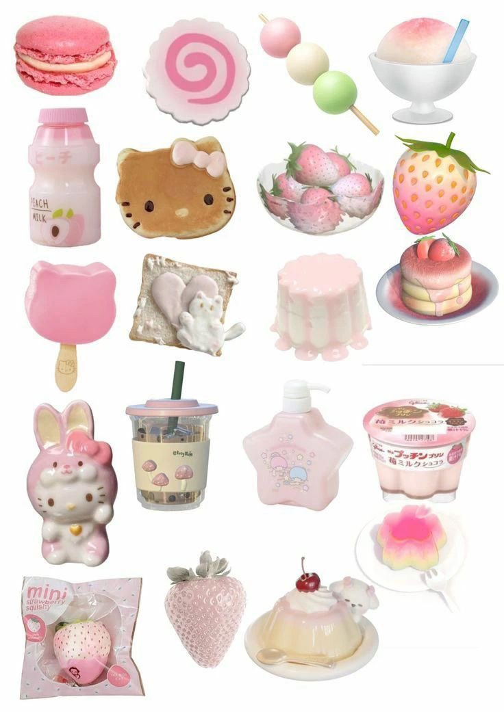

☆猫猫国国王桜夏一世☆
@sakura2333owo
@orisam123 @zqtlovekris99 我受不了了…鱼板图案🍥十几年前就是宅文化萌属性的一个比较标志性的元素了 可参考:四叶草 草莓 饭团 三色团子等。一直在cutecore里是比较热门的元素，也只有国内药娘把鱼板当成跨标志 补药身边即世界 小鱼板求放过好嘛…( ´. _ .` )
（够了我有点心疼正常lgbt天天被奇怪发言帖败坏路人缘了）


折筱orisam🏳️⚧️🍛🍚🍲🍙🍱🍣
@orisam123
@zqtlovekris99 我真觉得鱼板这个图标应该是药娘先带起来的
除了药娘谁会拿补佳乐上的装饰图案当自己logo啊
我看见这个只能联想到“我只吃补子”